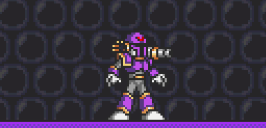
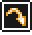

Mega Man X is the eponymous protagonist of the Mega Man X series. He was the successor of the original Mega Man and is Dr. Thomas Light's greatest creation. X is a Maverick Hunter who fought alongside his partner Zero in order to maintain peace and stability in the world and protect humans and Reploids alike from Maverick Reploids, though X would like nothing better than the opportunity to stop fighting.

X is the game's general purpose ranged trooper. His primary attack is shooting whatever weapon he currently has equipped. By holding down the attack key, you can charge your weapon; each weapon has a different charge effect. All special weapons run on limited ammo. The X-Buster does not have an ammo limitation.
Also keep in mind that having a weapon equipped makes you weak to a specific other weapon! This weapon corresponds to boss weaknesses in the real game, so for example if you have shotgun ice equipped you will be weak to fire-wave and take double damage from it! Note that the X-buster does not have any weakness.
X can dash, jump and climb, like in the real games. He can also do an air dash. However, unlike Zero, he lacks a double jump.
Advantages
Disadvantages
In non-1v1 modes, X can carry up to 3 weapons at a time and switch weapons in his loadout menu. Note that the X-buster is not mandatory but recommended in the first slot because of its infinite ammo.
See the weapon guide here for a guide to X's arsenal: Weapon Guide
X can use Scrap (a currency earned on each kill) to purchase armor upgrades in the in-game upgrade menu. Different armor sets from the various SNES games are available. You can even mix armors from the different armor sets, though you won't be able to take advantage of set bonuses unless you equip all 4 armor pieces in the same armor set.
See the armor guide here for a complete guide to X's upgrades: Armor Guide
If X has all 4 armor pieces equipped (any combination) he can upgrade to the Ultimate Armor for 10 scrap by pressing SPECIAL button in the armor menu. The Ultimate Armor is lost on death and must be re-purchased for another 10 scrap if you want it again. This gives X the following abilities on top of the current equipped armor:
In non-1v1 modes, you can decide what to do for X when the SPECIAL button is pressed in X's loadout. By default, it shoots the X buster. You don't need the X buster equipped for this, so it's a way to carry four weapons at a time. You can change it to swing a beam saber instead, a la MMX6. Both these options, however, require X to have no armor parts equipped. If you have armor parts equipped, SPECIAL will activate armor abilities instead. See the armor guide for more details.
If X has not equipped any armors, you can activate this mysterious hyper mode by pressing SPECIAL immediately after dying, for 10 scrap. After a brief scene with Dr. Light's hologram, X will revive, refill his health, and gain the following properties:
In general, X is extremely versatile, with a vast array of special weapons and armor available to choose from depending on the situation. Though primarly focused on ranged attacks, some special weapons allow for melee playstyles as well. As X, you should constantly evaulate the flow of the game, considering which weapons allies or enemies have equipped, whether a flag needs to be defended from heavy attack, or the distribution of characters on your team or the other. Many of his special weapons have indispensable support effects in team modes that no other character can provide. Overall a more strategic, defensive tactician.
As X, you will want to make heavy use of charge shots, his primary distinguishing ability from other characters. Charge shots use a lot of ammo but tend to be very powerful and debilitating, often causing full flinch or large area of effect spells. While the DPS of charge shots is low due to the charge time, they are effective forms of burst damage and be quickly followed by uncharged shots for additional followup damage. Arm upgrades greatly increase the effectiveness of charge shots and should be prioritized in modes where kill count is the objective.
For Hyper Modes, Unlimited Potential wreaks havok in low player count matches and when combined with Sub Tanks and Heart Tank upgrades can be tough to neutralize. However, being a melee oriented hyper mode with constant health loss it dies rather quickly to large crowds and focus fire. Ultimate Armor on the other hand is very strong against crowds due to the large size, range and piercing effect of Plasma Shot as well as the invulnerability frames that Nova Strike provides. However, utilizing either of these forms effectively requires a lot of scrap investment (in heart/sub tanks and armor upgrades, respectively) and won't be a threat until the late game.
When fighting another X, weapon weaknesses are key. Because certain weapons do double damage to other weapons, you'll want to pick a good variety of weapons that can cover each other's weaknesses, and switch out if you are weak to a foe's weapon. In certain cases it is possible to fight against a weakness, such as if they are low on health and there are other foes nearby actually weak to your weapon, but generally it's not recommended.
Another thing you should keep in mind is your current health and ammo, and theirs possibly. If you are low on health it is ill-advised to fight a head-on battle. You should use charged shots, playing defensively, try to pick them off with off-screen shots, as you search for health. The same applies for low ammo situations. Note that if you have even one bar of ammo left, you can still do a charge, so make use of this tip as much as possible to squeeze out the most use of your remaining supplies!
Zero was designed as an aggressive melee attacker while X is more of a ranged defender. As such, you should attempt to "kite" a charging Zero whenever possible (dash/retreat out of his melee range, quickly turn around and shoot, and repeat), especially with charged shots that will cause him to flinch, buying time. As mentioned previously, the foot parts are useful as they allow you to outspeed him and therefore maintain your distance while kiting. Watch out for ambushes from above or below, as Zero is very scary if he can get in your face unexpected. Weapons that can keep him away, such as Storm Tornado and Gravity Well, are also useful.
Bear in mind that Zero can reflect many of your projectiles (!) with his Z-Saber so avoid the X-buster, Chameleon Sting, Electric Spark, Shotgun Ice or Hadouken whenever possible. The last thing you want is to spend time charging a shot, only for it to come straight back and take you down!
The most important thing to remember when fighting a Ride Armor Vile is to aim for his head. As X, depending on your weapon, you may need to jump for this. Weapons that can hit at flexible angles or home in on their targets are generally more effective against Vile, such as Homing Torpedo (which homes in on Vile's head). The foot armor parts also will help in outrunning him from his punch range. Always make sure you're out of Vile's punch range, and kite a charging Vile similar with how you would fight Zero. Once you're fully upgraded, a Hadouken will destroy the Ride Armor in one clean hit, leaving Vile vulnerable to being finished off. Remember that the Rolling Shield doesn't block melee attacks like Vile's punches or stomps, but it will guard against his stun shot and bombs. Finally, one of the most valuable weapons against Vile is the Strike Chain as it can yank him straight out of the Ride Armor. If a good Vile is causing trouble, don't hesitate to switch to this weapon.
Axl is similar to X in that he is a ranged character, and so unlike with Zero and Vile opponents, kiting is not really an option. Axl's main difference is his lack of raw power per shot but makes up for this with much better aiming capabilities and rapid fire attacks. You'll want to combine fast and unpredictable movement with close range dives into his face accompanied with a charge shot - up close and personal, Axl has difficulty hitting his targets due to his minimum range.
The X vs Sigma matchup embodies the eternal struggle between good and evil. Both characters have the capability to effectively counter each other in a never-ending arms race. You'll make quick work of a Maverick that is weak to your current special weapon, so take advantage of good matchups whenever possible. On the flip side, Mavericks that your special weapon is weak to will maul you quickly, so be sure to switch out of it the instant you see the Maverick that counters your weapon. Unique to this matchup, X can earn the special weapon of a Maverick after defeating one, or fully replenish its ammo if he already has it, so you can aquire a large arsenal by hunting down Sigma's henchmen, though these extra weapons won't persist after your next respawn. Note that Sigma himself and his various forms do not have any weakness to any of your special weapons in MMXOD. Electric Spark won't do double damage to Commander Sigma, Rolling Shield won't do extra damage to Wolf Sigma, etc.

Zero is the deuteragonist of the Mega Man X series. He is the successor of Bass and the greatest creation of Doctor Albert W. Wily. A high ranking Maverick Hunter and legendary freedom fighter, he's a die-hard warrior who doesn't hesitate to take action. However, behind his cold and emotionless attitude lies a wounded soul.
Zero is the game's main close-ranged specialist, with combo-oriented gameplay. However, if you equip Awakened Zero or the Z-Saber loadout options, he can become a ranged threat as well.
Advantages
Disadvantages
The ground attack option determines what Zero's main ATTACK key does. Here are the options:
The ground special option determines what Zero's SPECIAL key does. Here are the options:
Note: these only apply if Z-Saber is equippped in ATTACK slot. If K-Knuckle is equipped, ground SPECIAL will perform a slow, powerful punch with a green aura. If Z-Buster is equipped, Zero will perform a single slow but powerful saber swing.
The air special option determines what technique Zero performs when SPECIAL is pressed in the air.
The special uppercut option determines what technique Zero performs when SPECIAL + UP is pressed on the ground.
The special down thrust option determines what technique Zero performs when SPECIAL + DOWN is pressed in the air.
The giga attack option determines what technique Zero performs when SPECIAL + DOWN is pressed on the ground. All giga attacks provide invincibility when used, and run on an ammo meter that fills as Zero takes damage.
Zero can morph into a stronger "hyper mode" form. To do so, you must have at least 10 scrap, then hold the ATTACK button to charge, and release at full charge to transform. Here are the hyper mode options:
Note, if the Z-Buster is equipped in the ATTACK slot, Zero will not have access to Awakened or Nightmare Zero. He will instead have access to a different form of Black Zero ("Black Buster Zero") which is activated differently (hold WEAPON LEFT or WEAPON RIGHT with 10 scrap). Black Buster Zero lasts until death, moves faster, can triple jump, and charges faster.
As Zero, you are an aggressive close-quarters-combat character. You close in on your opponents and quickly dispatch them with high-damaging attacks and combos. In team modes, you charge in the battle and let your ranged allies shoot unimpeded.
As Zero, you should understand how each of your techniques work and string together combos whenever possible. For example, one good combo is Ryuenjin into Hyouretsuzan, as the former will bring Zero into the air and allow for a setup into the latter. You can then further combo the frozen enemy with a standard 3-slash attack, or if you're feeling lucky, a Raijingeki (though foes can mash out of the freeze if they're quick enough and aren't low on HP.) Another combo is Shippuuga into anything, taking advantage of the flinch to close in on foes more easily. You can also Rakuhouha aerial foes, bringing them down to the ground with the flinch, and catch their landing with a powerful move like Raijingeki, a 3-slash combo, or even another Rakuhouha!
Overall Zero is a powerful character, but he does take some skill to use, like in the real games.
X has "limitless potential", which means that he gains strength as the match progresses. On the other hand, Zero starts off strong, but cannot upgrade to the extent that X can, so you'll want to be wary of fully upgraded X's in the late game.
Fighting X can be a high-risk, high-reward endeavor. On one hand, if he sees you coming, he can "kite" you by repeatedly dashing away and shooting, avoiding all your melee range attacks. On the other hand, if you can quickly or unexpectedly get in range you will eliminate him fast. Try to ambush from above, below or behind, or corner an X, to prevent being kited. You can also close the gap with a Z-Buster shot, a great approach option for any projectile user eager to keep their distance.
Consider trying to reflect an X's projectiles if he is using a reflectable special weapon and causing problems with it. Only attempt this at a distance, since doing it at point-black will not work, and the timing is more challenging the closer you are. Slow projectiles fired off-screen are easier to reflect and should be reflected whenever possible. Consider going after X's with reflectable weapons as this makes them weaker to you. If an X is attempting to charge their weapon, attack until they are close to complete, then back off, and attempt to reflect or bait out the charge whenever possible. Also remember, you can reflect Hadoukens, so in the late game, always be expecting it, and try to predict/or bait the move so you can get a quick reflect kill on X!
Zero vs Zero is a battle of skill, spacing and timing. If your Z-Saber swing clashes with an enemy Zero's saber, your attack will be blocked and you will be pushed back. Whoever can better space and time their attacks and pull off faster attacks will generally prevail.
Vile has the ability to interrupt your combos such as the 3-sword ground swing combo with crowd control or flinch, either from his stuns or his Ride Armors. Consider powerful single blows instead. Try to avoid frontal assaults against Ride Armors and if you do, use flinch moves whenever possible to knock it back, or even off a cliff. Uppercuts are great for dealing with Hawk ride armor, especially E-Blade which will flinch it heavily.
Vile MK-II has some more powerful abilities and his grab can go through your guard, so be vigilant when fighting his upgraded form. Vile V's mobility can get the best of your short range; try uppercuts to catch him if he flies above you.
Zero can be an effective counter to Axl. You can reflect several of his projectiles such as Axl Bullet, Ray Gun, Bound Blaster and Ice Gattling. Try to close in on Axl whenever possible and get up close and personal as he will have difficulty hitting targets at close range due to his minimum range on most of his weapons. Also remember that Axl cannot shoot through walls, so try to place a wall or cover between you and Axl if you're getting pestered by gunfire when dealing with other threats, or when closing in.
One thing to watch out for is an Axl shooting at you when you're pre-occupied with another fight. In this scenario, Axl can get a lot of shots on you uncontested. If you're in a fight and an Axl comes along, consider abandoning the fight and going after Axl unless you're close to winning. Otherwise Axl can shoot you in the back while you're swinging your sword or performing techniques, which leaves you standing still and vulnerable. For this reason, you should also avoid slow, laggy techniques like Raijingeki vs Axl as they make you a very easy target to lock on to. Try to constantly dash and move and use quick air attacks to close in the distance and block his bullets more easily.
Sigma can be a tough foe for Zero in several regards. His "Tough Guy" passive trait means that he'll flinch far less from your moves, making combos harder to pull off. In addition, his sword swing will cause a full flinch to you, which can further disrupt your melee combos. To counter this, use powerful single hit moves as opposed to a string of weaker combo attacks. Sigma has several weak points that can be exploited. A guarding Sigma can easily be picked off with Raijingeki as this move pierces his defense. Mavericks are often standing still and are also vulnerable to Raijingeki and with luck you can hit both Sigma and Mavericks at once with this move. Getting above him where his sword is harder to hit you is also a good bet.

Vile is a major antagonist in the Mega Man X series. He used to be a member of the Maverick Hunters and was ranked S-A Class in Sigma's 17th Elite Unit prior to his commander's rebellion against humanity. Due to being a borderline Maverick, he was removed from duty and detained, being freed during Sigma's rebellion so he can cause as much destruction as he wishes.
Vile is rather unique among characters in that he can summon and command various Ride Armors with his third weapon slot. Ride Armors have higher HP than Vile and can take hits for him; however, be careful, as enemies can aim at your exposed head in the cockpit seat to deal damage directly to Vile, who only has 16 bars of health.
Vile does not spawn with any Ride Armors and it costs 5 scrap to summon a Ride Armor, so he must progress thorugh a match and earn kills before calling down the big guns. He comes with three switchable weapons: the Front Runner, the Vulcan and the aformentioned Ride Armor slot. In addition, SPECIAL button activates many secondary abilities, which tend to be debilitating traps and bombs that provide effective support for his regular weapons.
Pros
Cons
Vile can switch between two capable weapons in slot 1 and slot 2. These weapons, in addition to his specials run on a shared energy meter that rapidly regenerates when not attacking.
Vile's iconic shoulder cannon. On the ground it can be aimed upwards (hold up), diagonally upwards (hold forward + up), or diagonally downwards (hold down + forward). It can also be fired in the air, where it can also be aimed upwards or downwards, and when wall sliding and climbing. Overall this weapon is great for anti-air, kiting enemies, and otherwise hitting enemies at odd angles.
Here are the different cannons Vile can equip in his loadout menu:
| Weapon | Stats | Description |
|---|---|---|
| Front Runner (Default) | Damage: 3 Cooldown: 0.75s Energy: 8 |
This is Vile's basic cannon and is a good all-around power shot. |
| Longshot Gizmo | Damage: 1 Cooldown: 0.1s Energy: 4 per shot |
Vile shoots 5 weak cannon shots in rapid succession. If Vile doesn't have enough energy, he won't shoot all 5 shots. While it's being used, he is immobile. This deals good burst damage but leaves you vulnerable during and after use. |
| Fat Boy | Damage: 4 Cooldown: 0.75s Energy: 24 per shot |
A powerful shot that deals a full flinch on hit. Its high energy cost means it can't be fired rapidly. |
Vile's deadly finger machine gun. It shoots very rapidly and deals a high rate of fire, but can only shoot straight ahead. It's best unleashed on grounded threats. Stun your enemy first to ensure the most damage, and to prevent Zero from reflecting the bullets.
Here are the different vulcans Vile can equip in his loadout menu:
| Weapon | Stats | Description |
|---|---|---|
| Cherry Blast (Default) | Damage: 1 Cooldown: 0.1s Energy: 15 per second |
With a range of about half a screen and a rapid fire rate, this vulcan is easy to use. |
| Distance Needler | Damage: 2 Cooldown: 0.25s Energy: 6 per shot |
While this vulcan has a slower rate of fire, it deals more damage, goes further and faster, and can pierce enemies. |
| Buckshot Dance | Damage: 1 Cooldown: 0.12s Energy: 17 per second |
This vulcan fires more bullets in a spread pattern, dealing more damage up close, but the spread makes it ineffective at long range. It also chews through E-Bar quickly. |
Vile's special moves can be activated with the SPECIAL button and can be used in conjunction with his normal weapons as effective support abilities.
Missiles are activated by pressing SPECIAL button on the ground without any directional input. They tend to shoot either stunning or explosive shots.
| Weapon | Stats | Description |
|---|---|---|
| Stun Shot (Default) | Damage: 0 Cooldown: 0.75s Energy: 8 |
Vile's stun shot from MMX1, it deals no damage but stops enemies in its tracks. Like with the cannon, it can be aimed up or down. As Vile MK-II, this is powered up and deals 1 damage per hit but travels a bit slower. |
| Humerus Crush | Damage: 3 Cooldown: 0.75s Energy: 8 |
One of Vile's MHX missiles. It shoots straight and deals decent damage, but doesn't stun. Good for an extra burst of damage in combos. |
| Popcorn Demon | Damage: 2 Cooldown: 0.75s Energy: 12 |
This missile splits into 3 after travelling a certain distance or when SPECIAL is pressed. Time or space it so that all 3 hit for major damage. |
Rocket punches launch Vile's fist at enemies and are activated by pressing SPECIAL button on the ground + LEFT or RIGHT.
| Weapon | Stats | Description |
|---|---|---|
| Go-Getter Right (Default) | Damage: 3 Cooldown: 1s Energy: 8 |
Vile launches his fist at enemies to teach them a lesson. The fist moves very quickly and applies a full flinch, but leaves Vile vulnerable until it returns to his arm. Hold the shot down to make the fist go further. It also can be aimed with UP/DOWN. |
| Spoiled Brat | Damage: 2 Cooldown: 0.2s Energy: 8 |
This rocket punch fires at a much faster rate and doesn't need to return to Vile before he can resume control. However, it is weaker. |
| Infinity Gig | Damage: 3 Cooldown: 1s Energy: 16 |
This rocket punch homes in on enemies but has a higher energy cost and can't be aimed up or down manually like with Go-Getter Right. |
Napalms are activated by pressing SPECIAL button on the ground + DOWN. These launch a bomb from Vile's knee with various splash damage effects upon explosion. Though they have high cooldowns, they tend to cause lots of damage in an area.
| Weapon | Stats | Description |
|---|---|---|
| Rumbling Bang (Default) | Damage: 2 (grenade), 1+ (napalm) Cooldown: 2s Energy: 8 |
Vile ejects a grenade from his knee. The explosion deals two damage and spews hot napalm in an area, dealing an additional 1 damage over time if opponents are standing in the hot substance. Effective for area denial. Combine with the stun shot to ensure opponents stay in the Napalm for longer. |
| Fire Grenade | Damage: 2 (grenade), 1+ (flames,burn) Cooldown: 4s Energy: 16 |
This napalm travels along the ground, laying a path of fire that burns enemies on hit. |
| Splash Hit | Damage: 1 per hit Cooldown: 3s Energy: 16 |
This napalm explodes into a whirlwind that has good vertial range and can even suck enemies in that are too close. |
Balls are activated by pressing SPECIAL button in the air. These drop projectiles from Vile's knee with various effects. They are effective air-to-surface weapons.
| Weapon | Stats | Description |
|---|---|---|
| Air Bombs (Default) | Damage: 2 per bomb Cooldown: 1s Energy: 8 per ball |
Vile releases three bombs from his knee that drop downwards and split into two faster moving projectiles. This is an effective move for hitting enemies directly below you where the Front Runner couldn't reach. |
| Stun Balls | Damage: 0 Cooldown: 1s Energy: 5 per ball |
This move shoots out a fan of stun shots from Vile's knee that deal no damage, but stun enemies for two seconds, like with the Stun Shot missile. |
| Peace-Out Roller | Damage: 3 Cooldown: 1.25s Energy: 16 |
Launches a ball of electricity that splits into two upon making contact with a surface. Like with all electric moves, it causes a "mini-flinch" on hit, temporarily shocking enemies. |
Cutters are activated by pressing SPECIAL + UP on the ground. They are good surface-to-air weapons.
| Weapon | Stats | Description |
|---|---|---|
| Quick Homesick (Default) | Damage: 2 Cooldown: 1s Energy: 8 |
A standard boomerang-like attack that can also retrieve pickups. Upon returning to Vile it recovers some lost E-Bar, which with clever play can be used to your advantage. |
| Parasite Sword | Damage: 2 Cooldown: 1s Energy: 8 |
A cutter that grows as it flies upwards and can pierce enemies, but does not return to Vile. |
| Marooned Tomahawk | Damage: 1 per hit Cooldown: 1s Energy: 16 |
This long-lasting cutter spins in place for a few seconds, dealing damage over time to enemies that make contact with it. It will only travel a short distance before stopping, but you can increase that distance by holding SPECIAL. |
Flamethrowers are activated by pressing SPECIAL + DOWN in the air. They are good air-to-surface weapons. They can be cancelled early by pressing DOWN + SPECIAL again in the air to save some E-Bar.
| Weapon | Stats | Description |
|---|---|---|
| Wild Horse Kick (Default) | Damage: 1 per hit Cooldown: 1s Energy: Half of E-Bar per burst |
A standard flamethrower that burns enemies, but doesn't work underwater. |
| Dragon's Wrath | Damage: 1 per hit Cooldown: 1s Energy: Half of E-Bar per burst |
It fires at a more horizontal trajectory, but cannot burn. |
| Sea Dragon's Rage | Damage: 1 per hit Cooldown: 1s Energy: Half of E-Bar per burst |
An icy flamethrower that works underwater and freezes enemies, but has short range. |
Lasers are activated by charging SPECIAL button and releasing at full (pink) charge. They are powerful but costly and slow to charge.
| Weapon | Stats | Description |
|---|---|---|
| Rising Specter (Default) | Damage: 6 Cooldown: N/A Energy: 24 |
A powerful diagonal-upwards laser. It can't be used in the air, so if Vile is in the air when it's used, he will drop to the ground, uncontrollable, before launching it and regaining control. |
| Necro Burst | Damage: 4-8 (depends on distance) Cooldown: N/A Energy: 32 |
A powerful explosion that deals more damage the closer the enemy is to the blast center. This move will inflict heavy self-damage to Vile, so be careful! However, you can use it to kill yourself to activate MK-II or V. |
| Straight Nightmare | Damage: 1 per hit Cooldown: N/A Energy: 24 |
Fires a column of wind that pushes enemies back, like Storm Tornado but dealing significantly more damage. Can be used in the air. |
Several of Vile's loadout slots can be set to NONE to not equip them. You can specify what weapon gets fired in its stead. Alternate inputs can give some weapons different trajectories. Here the the available alternate inputs:
Vile can choose between 4 different Ride Armors to summon in weapon slot 3. Once you've summoned a mech, use this weapon slot to recall it to your location at any time when you are out of the mech.
This is Vile's standard, trusty Ride Armor used in MMX1. It's the most well-rounded mech, combining power, speed and mobility. Vile's primary attack button is punching with the mech. This move comes out surprisingly fast and deals 3 points of damage with a full flinch, but it has a rather short range. You can also jump on enemies to deal damage to them as well. You can also dash in the mech. Press the down arrow key in the mech to duck and hide inside of it, which will fully protect Vile himself from all damage, but causes the ride armor to become stationary (but you can still punch). Also while ducking in his Ride Armor, Vile can toss his Napalm out of his mech with SPECIAL key, similar to outside of it when crouching. Vile can shoot his missile while in the Mech (but not ducking inside it) with the SPECIAL key. You can hover in this Ride Armor briefly by holding JUMP in the air, good for making jumps that might be just out of reach otherwise.
A slower but stronger Ride Armor. Its spiked fists deal 4 damage on hit but swing slower than the normal Ride Armor. The punch can also be charged to fire a chain attack that can attack enemies further away, and the charge-up drilling will also damage enemies close to the Ride Armor. Dashing is possible while charging but you dash slower, and you can even dash when ducking and charging, but the dash speed is reduced even further.
This Ride Armor has extended flight capabilities (hold down JUMP in the air to hover/fly, which runs on a fuel meter that recharges after landing). It lacks a punch, instead firing two fast moving missiles that travel straight ahead and deal two damage each. Missiles can also be shot straight down by holding DOWN key before shooting. This mech only has 24 bars of life, so be careful and use the mobility to avoid powerful attacks. You can also dive bomb foes with the stomp which can be an effective tactic against grounded foes that would otherwise be difficult to hit from the air with your missiles. You can also drop two of whatever Napalm Vile has equipped from the mech's feet, with DOWN + SPECIAL, though you only have a limited stock per mech. Note that this Ride Armor will short out and self destruct in 15 seconds if it submerges underwater.
This Ride Armor really shines in the water, where it can launch torpedos that home in on foes, as well as swim (hold down JUMP in the water to rise upwards, which runs on a fuel meter that recharges after landing). It's no slouch on the land either, where it excels at jumping, having the highest jump of all Ride Armors, and, naturally, being well suited for stomping on enemies. On land, it can only jump, not walk, but you will jump higher on every consecutive jump, for up to 3 jumps, and can jump further by holding down the DASH key. The torpedos won't travel forward when shot on land but will still drop straight down so you can drop them on enemies below you; combine this with stomps for extra damage output. Note that this Ride Armor only has 24 bars of life, so avoid taking too much damage if you can. It also has no arms so cannot punch. However, it comes with a ground pound move (DASH + DOWN in the air) which can crush enemies below you and send enemies in the air straight down. Even if it misses, grounded enemies will get knocked off their feet if they are close to the shockwave.
After dying as "normal" Vile, if you have 5 scrap, you can revive yourself on the spot as Vile MK-II (press the SPECIAL button on the respawn screen). Vile MK-II carries a missile rack on his shoulder, so he fires missile-type weapons much faster, and the default stun shot is also improved to deal 1 damage per hit. Vile MK-II also gains access to an additional special move, the health-leeching grab, that can be activated with DASH + SPECIAL. The grab's damage ignores defense boosts. You can shoot cannons, missiles and rocket punches at an enemy while grabbing them. Note that the grab will not work if done in a spot that would clip the victim into a wall or other obstacle.
Vile MK-II also comes with a shield on his back that reduces damage from attacks from behind. If an attack deals one damage, it is blocked completely. The shield even protects Vile's back in Ride Armors. Try to take advantage of this passive trait whenever possible and turn your back to your enemies when your weapons or specials are on cooldown.
As Vile MK-II, if you have 10 scrap, you can even summon the mighty Goliath Ride Armor! This armor functions similary to the N-type, except it deals more damage, has a dash punch (hold down ATTACK while dashing), and has a ranged attack (press the SPECIAL button in the mech).
You can even revive as Vile V from MMX8. This is possible after dying as normal Vile (press the ATTACK button on the respawn screen) or as Vile MK-II (press the SPECIAL button on the respawn screen) for 5 scrap in either case.
Vile V has a jetpack and can hover in the air by holding JUMP but this will drain your fuel meter. Fuel recovers when you land, much like Hawk armor.
Vile V also has access to a powerful move, Hexa Involute, which can be activated by charging the SPECIAL button all the way to green level charge, and releasing. (If you want to fire your laser, release at pink level charge.) This move grants invulnerability and surrounds Vile V with six beams of electric beams that radiate from him and spin around him. While powerful, it drains his fuel meter entirely and his E-Bar quickly, but can be cancelled by pressing SPECIAL again.
Vile V has a unique way in which he controls his Ride Armors. Much like in MMX8, he doesn't actually pilot them, but remote controls them. Once you summon a mech, you'll control both it and Vile V at once, unless the mech slot is active, in which only the mech will be controlled. You can jump on your mech to ride it while standing, which lets you attack with both the Mech and Vile at the same time. However, Vile V loses the ability to duck in his mech and thus is more offensive oriented when using ride armors. While on the mech slot, press UP to summon it to your current position and DOWN to deactivate it. It can be reactivated by switching back to the slot.
Vile has two armors he can equip at the cost of scrap, similar to X, in the Upgrade Armor in-game menu. Here are the armors below:
Outside of his mech, Vile has capable ranged weapons, but requires use of his special abilities to get the most damage out of them. You'll want to stun enemies and then combo them with a series of quick attacks in succession, such as a napalm + cannon blast + rocket punch, or a stun shot + napalm + vulcan burst. Vulcan is really damaging but eats up ammo quick, so try to use it judiciously.
Inside of his mech, Vile can really shine as a "tank" type character, soaking up damage for the team and protecting allies on the front lines, while serving as a diversion and front-line brawler while your teammates can score free hits from a safe distance. Smart foes will try to target your exposed head sticking out of the cockpit seat. To counter this weakness, press down arrow to have Vile duck inside of the mech, which protects Vile's life bar. However, you cannot move when hiding like this, only punch, so expect alert foes to back up out of melee range and try to whittle down your ride armor health. You can try to counter this by popping out of your mech and shooting your stun shot to take advantage of their further range.
Vile MK-II can deal serious damage with his grab, followed up by cannon shots + a rocket punch finisher on the hapless enemy. Reviving as MK-II or V at the right time can be pivotal for your team, allowing capturing or defending a critical objective. But in other situations it could be a waste of 5 scrap and cause you to quickly get killed, so use your revives judiciously.
Outside of a mech, try to match upgraded X armors with your own armor upgrades such as Frozen Castle or Speed Devil. Then, use Ride Armors or MK-II or V to keep up with his rising power level.
Inside of a mech, when fighting X players, prioritize ones that lack the foot parts, as they will be easier to punch and catch up to. For ones that do have them, you'll need to use the stun shot to effectively catch up to them and punch them. If an X is charging his weapon, be prepared to duck to avoid the charge shot. If an X is jumping to reach your head, you should also jump yourself to deny him those headshots that are so dangerous to Vile's HP, and then stomp down on him, or fire a stun shot, to make use of the aerial time. Jumping out of your mech, dropping bombs, and landing back in can also be an effective strategy, especially against a Hadouken-happy X, as evacuating the mech makes it immune to damage. Finally, be very careful of the Strike Chain, as if X can grapple your head, you'll get yanked straight out of the Ride Armor, and though you can summon it back, that has a 4 second cooldown. So be prepared to duck if a chain is heading your way.
Outside a mech, you can either try to Kite Zero with ranged moves or try to out-combo him with various weapon combinations. The stun shot can help initiating the combo. Always remember that Zero is deadly at close range, however.
Inside a mech, Melee zero can be dealt with more easily but be aware that some of his moves can flinch your armor, pushing it back, so be careful. Ride Armors are not as great a counter to Zero as they once were before, but can still sometimes get the job done.
Outside of a mech, landing the first stun shot is important. In general, whichever Vile can make better use of specials, will come out on top.
Inside of a mech, Vile vs Vile boils down to a few factors: who can get a stun shot in first, and who has higher Ride Armor HP when the fight starts. Try to be the first to get the stun shot in to get free punches in. Note that Vile MK-II's grab can target Ride Armor users and will immediately eject them out of the armor, so this can be a great counter to mech users.
Outside of a mech, Axl can still be a threat with his high headshot damage and aim flexibility. As with most matchups, try to land the initial stunshot to stop him in his tracks. Your Front Runner will be helpful for hovering Axls trying to get the height advantage over you.
Inside of a mech, Axl is the most dangerous threat to Ride Armor tactics. Your exposed head is easy pickings for well aimed sniper shots, which can lead to wasted scrap on Ride Armors that don't end up soaking up much damage. As such, consider MK-II instead if there are a lot of Axls. The Hawk and Frog armors are somewhat less vulnerable to sniper tactics if you use your vertical mobility to your advantage and maintain a height advantage.
Sigma's Mavericks play a very similar role to your Ride Armors. They are effective support entities with resistance to crowd control and the ability to dish it out. So using your own Ride Armors to match his Mavericks can be a good bet, as they'll not be vulnerable to your CC options like stun shot or MK-II grab or your various flinch combos.
Against Sigma himself, try to stay away from melee range or you'll be disrupted by his sword flinches, and remember that his Tough Guy passive will make combos harder to pull off, though he is still vulnerable to Stun Shot and MK-II grab.
Axl is the tritagonist of the Mega Man X series. He is a prototype of the New Generation Reploids with the unique ability to mimic the external and internal characteristics of anyone he encounters. Axl has had important roles in Mega Man X7 and X8, effectively making him the third playable protagonist of the Mega Man X series alongside Mega Man X and Zero.

Like X, Axl is a ranged character that can switch between various weapons. Unlike X however, he uses actual guns. These firearms can be aimed anywhere on the screen, and at any angle. Axl also has a unique Copy Shot ability which lets him transform into opponents, and even an assassination ability when disguised that can kill in one hit if aimed at the head.
These qualities make Axl a "spy agent" type character with a specialist role on the team, using his aiming capabilities to assassinate key threats, and sneaking behind enemy lines while disguised to sabotage the objective.
Advantages
Disadvantages
Axl has two different aim modes that can be changed in Settings at any time.
Also known as "8 way" aim, this aim mode plays like a hybrid between MMX7 and MMX8 Axl, and is best for keyboard or controller players. Push the arrow keys in the direction you want to aim, and Axl will snap his aim to that direction. Release, and Axl will reset his aim straight forward. Press up+left/right to aim diagonally up, and down+left/right to aim diagonally down.
This aim mode supports an auto-aim mechanic similar to the one found in MMX7. Axl will automatically lock on enemies within a certain angle of your gun direction. This can be turned off in Settings. Note that unlike in MMX7, you can't cycle between potential lock-on targets, but you can cancel a lock-on by turning around, or pointing your gun away from the enemy.
In addition, this mode has two special key bindings: "Aim Key" and "Crouch". "Aim Key" allows you to activate a special aiming mechanism when held, configurable in Options. By default it is bound to LSHIFT. Here are the Aim Key Functions you can set:
The Crouch key is a separate keybinding specifically for Axl to crouch, as otherwise the DOWN key could conflict with AIM DOWN. By default it's bound to LCONTROL.
Note that if you're using a controller and bind the aim controls to an analog stick, and set the analog setting to "yes" in Settings, Axl will aim his gun at the exact angle you push the analog stick in, allowing for 360 aim, unlike with keyboard keys or a D-Pad. This makes this control scheme the optimal one for analog stick controller players.
This aim mode involves moving a cursor on the screen, and allows you to play Axl with a mouse, much like a third person shooter. By default you use WASD for movement, Space to jump, and Left Shift to dash. The cursor can be moved with mouse or the Axl aim bindings in Controls menu. For the mode's keyboard controls, this control scheme has its own control binding in the controls menu, "Keyboard (Axl Cursor)". Note that you can use this mode with a controller as well, but it'll use the controller binding instead.
Axl has a total of 9 guns he can choose from, originating from MMX8. He can carry three guns at once and can change the slot 2 and slot 3 gun before or during a match, like with X's special weapons. However, the Axl Bullets must be equipped in slot 1 as it's present in most of Axl's spritework and provides him with the integral Copy Shot and Assassination abilities. All Axl guns (except Axl Bullets) run on limited ammo, like with X's special weapons.
In addition, each of Axl's guns have an alt fire shot that can be triggered with the SPECIAL button (RIGHT MOUSE with cursor aim). By default, the alt fire will shoot one of Axl's special weapons from MMX7. However, each gun's alt fire (except Axl Bullets) can be configured and swapped out to activate a different special ability original to MMXOD. To do so, in the weapon select menu for Axl, press MENU SECONDARY key binding, default "SPACE" on keyboard with the gun selected.
Here are all of Axl's guns along with their description and stats:
 Axl Bullets
Axl Bullets
Axl's standard, trusty handgun. It's capable of rapid fire shots (hold down the shoot button). The alt fire is Copy Shot. Copy Shots deal 2x damage of a normal Axl Bullet shot but lack auto-fire capabilities and move slower. You can even charge copy shots to different levels. Level 1 deals 3 damage, and level 2+ deals 4 damage. Each level also increases the projectile speed. Enemies killed by Copy Shots grant Axl DNA Cores which he can use to transform into them (more on this ability later on in the guide). Note that though this weapon has an ammo bar, it's the only Axl weapon that will automatically recharge ammo.
 Ray Gun
Ray Gun
This sci-fi handgun shoots team-colored lasers at a high rate of fire. Hold down the fire button for automatic fire, which can create a continuous beam if Axl is stationary. Splash Laser shoots a beam of water that travels straight and can push enemies back, in addition to minor damage. It also extiniguishes burning enemies (friend or foe) but cannot be used yourself. It will however cause knockback to the Axl using it, which can be used to your advantage by aiming down when hovering, which can propel Axl upwards. Charge Beam shoots out a hitscan beam that deals more damage the longer it stays on an enemy.
 Blast Launcher
Blast Launcher
A powerful grenade launcher. The grenades are affected by gravity and will bounce off walls, and will blow up after 2 seconds. Explosion fires a fast energy rocket that travels straight and blows up immediately on impact with walls. The secondary alt fire allows you to manually detonate your own grenades, which deal more damage than the normal grenades. Do note that as a 2-handed weapon, Axl's dash will be 25% slower with it equipped.
Both grenades and the rocket will cause significant knockback to enemies. They will also cause self damage to the Axl who shot them if he is in the blast range, so be careful. However, you can use the knockback to your advantage and perform a Grenade or Rocket jump! However, this is high risk and requires quite a bit of skill.
 Black Arrow
Shoots arrows made of dark energy that home in on enemies and stick to walls. Arrows can headshot, and can damage enemies even when stuck on walls. Wind Cutter shoots a fast wind boomerang projectile that both homes in on enemies and returns to Axl on a successful hit (or if no targets were found) refunding the ammo used to launch it. Triple Arrow shoots three Black Arrows that do not home in on enemies but can deal heavy damage up close if they all headshot.
 Spiral Magnum
Spiral Magnum
A powerful magnum that shoots high velocity rounds. These can not only headshot, but also pierce enemy defenses, completely ignoring any defense/durability boosts such as X's armor, Zero's guard and Vile's back shield. (It shares this trait with Assassination.) Unique among Axl weapons, this weapon can shoot straight through walls and players, though it loses power the more distance it travels through a solid object.
The alt fires emphasize the "sniper" aspect of this weapon. Sniper Missle allows Axl to shoot a remote-controlled missile that can be aimed with UP/DOWN in directional aim or the cursor in cursor aim. This missile lasts for up to 5 seconds, starts off at 2 damage, and gains 1 damage point for every second it flies in the air, making it more effective on enemies farther away. However, Axl is immobile and vulnerable when the missile is being guided. Axl can prematurely detonate the missile by pressing the SHOOT key or by guiding it into a wall/player.
Zoom Scope gives the weapon a scope and laser sight, allowing Axl to zoom in. This reduces the viewport to a small targeting recticle, and only allows Axl to hit targets if his crosshair is directly over them. However, while scoped, a charge meter slowly grows from 0 to 100%, and the greater the charge, the more damage successful hits will deal. At 100%, headshots are an instant kill to any 16-health un-upgraded enemy. In addition, scoped hits are hitscan, instantly damaging enemies in the line of sight. However, Axl will shine a laser dot revealing his position and where he is aiming, alerting enemies of the threat. He is also vulnerable while scoped (like with Sniper Missile) and can't move. If he is moved in any way by an outside force, he will immediately zoom out. Finally, when scoped, Axl can't hit targets through walls; they will always miss. The laser pointer will tell you if you can hit where you're aiming.
Bound Blaster
The main shot fires a shot that bounces off walls. Moving Wheel shoots a large spiked wheel that can bounce off walls, deals 3 damage and causes a flinch. Sonar Beacon shoots a tracking beacon that can for a limited time reveal parts of the map via the same minimap that X3 helmet uses. The beacon will also stick to enemies hit by it.
Plasma Gun
The main shot fires an EMP burst that causes a full flinch and destroys Rolling Shields as well as temporarily disabling X3 barriers. Volt Tornado shoots an electrified tornado that can mini-flinch enemies, but it must be used from the ground. Plasma Beam fires a continuous hitscan beam of electricity when held that locks on to nearby enemies, causing mini-flinch (on a cooldown) for as long as the beam is on them.
Ice Gattling
An icy minigun. It fires ice pellets that can freeze enemies if several hit in a short time period. It must rev first before shooting, however, and when revving Axl can't dash or roll. However, he can throw up a Gaea Shield with the default alt fire, blocking most attacks and reflecting many projectiles for 5 seconds. The shield can also be aimed, but deals no damage. The secondary alt fire simply revs the minigun without shooting it, which can be useful in anticipation of upcoming enemies. This rev is faster than the normal one, so equip the rev alt fire for a more responsive weapon.
Flame Burner
A two-handed flamethrower weapon that burns enemies in its short-ranged cone of fire. Circle Blaze shoots an explosive fireball that burns enemies caught in the blast radius. The secondary alt fire puffs out a blast of air that can be used to reflect projectiles, push enemies back, or propel Axl in the opposite direction.
Copy Shot
With the Axl Bullet equipped, you can shoot Copy Shots with Right Mouse or SPECIAL button on controller. These deal more damage, but more notably, killing someone with the shot grants you their "DNA Core" in your weapon slot inventory. Switch to the DNA Core and press the shoot button to transform into that opponent, copying their name and equipped weapons/amor at their time of death! Up to 5 transformations can be stored in your inventory, and they are not lost on death. You can also preview a transformation's attributes such as the weapons, armor, ammo levels, etc with SPECIAL button with a transformation selected, before applying it.
When you activate a transformation, all your Axl weapon ammo will be replenished. While transformed as a character, you can use all abilities of that character, though the KBM controls are not rebound. You will also get two additional weapon slots: an Assassination slot and an Undisguise slot. Select the former and fully charge it up and release it on an unsuspecting enemy to deal 8 damage, or an instant kill if aimed for the head. Note that the headshot ignores any defense modifiers a character may have, and thus will always kill, except on players in invincibility states. This move will undisguise Axl once shot. Select the latter and use it to transform back into Axl immediately.
The Assassination slot and Undisguise slot have different behaviors if you press the SPECIAL button instead of SHOOT. For Assassination, you'll be able to immediately fire off a very effective "quick assassination" shot without having to charge, but at the cost of 2 scrap. For Undisguise, you'll be able to keep your current disguise in your inventory, again at the cost of 2 scrap.
In team modes, Copy Shot behavior is a little more special. You actually disguise as the player you killed, along with their team color! Use this ability to get behind enemy lines, capture the objective, and assassinate prime targets, without being noticed.
Hover
Axl can hover in the air for a short period of time. Simply press and hold the Jump key while airborne.
Dodge Roll
Axl can perform a combat roll by dashing while crouching, or by double tapping the dash key. This move grants invincibility frames for its duration but has a cooldown.
White Axl
This is a hyper mode much like Black Zero. Activate with 10 scrap by charging up the Copy Shot all the way and releasing. It lasts a limited time and allows Axl to hover indefinitely in the air. Activating White Axl also heals Axl and replenishes ammo for all of his guns. Each of Axl's guns also has a special power-up effect when used by White Axl.
Stealth Mode
This is a second hyper mode that can be swapped with White Axl in the loadout menu for Axl. It costs 10 scrap to activate, but drains it slowly over time, like Awakened Zero, and will not run out until Axl's scrap runs out. It can also be cancelled by charging up Copy Shot all the way. This Hyper Mode trades raw offensive power for defense and stealth, rendering Axl invincible to enemies while the effect lasts. However, Axl can still attack and shoot all his weapons while cloaked. Note that attacks while invisible temporarily reveal Axl for a short period, making him vulnerable to damage, so be careful. Try to use slower burst damage attacks like charged copy shots in this mode to reduce the vulnerability time.
Primary Weapon Crafting/Upgrades
The Axl Bullet can be upgraded in a match to a new gun (most of which originate from MMX Command Mission) by crafting with either DNA cores, scrap or both. To upgrade the Axl Bullet, go to Axl's loadout in a match and choose the weapon you want to upgrade to in the primary slot. Use WEAPONLEFT or WEAPONRIGHT to change between crafting recipies. Here are the weapons you can upgrade the Axl Bullet to:
| Weapon | Recipes | Description |
|---|---|---|
| Mettaur Crash | 3 scrap -OR- 3 Mega Man X DNA Cores -OR- 2 Mega Man X DNA Cores + 1 Scrap -OR- 1 Mega Man X DNA Core + 2 Scrap |
Pierces enemies, walls and defenses. |
| Beast Killer | 3 scrap -OR- 3 Zero DNA Cores -OR- 2 Zero DNA Cores + 1 Scrap -OR- 1 Zero DNA Core + 2 Scrap |
A shotgun that fires 5 shots at once in a spread. Deals 2x damage vs Mavericks and Ride Armors. |
| Machine Bullets | 3 scrap -OR- 3 Vile DNA Cores -OR- 2 Vile DNA Cores + 1 Scrap -OR- 1 Vile DNA Core + 2 Scrap |
Fires two shots at once, but less accurate. |
| Double Bullets | 3 scrap -OR- 3 Axl DNA Cores -OR- 2 Axl DNA Cores + 1 Scrap -OR- 1 Axl DNA Core + 2 Scrap |
Axl holds two Axl Bullets, one in each hand. As such it's just the Axl Bullet with a 2x fire rate but 2x ammo consumption. |
| Revolver Barrel | 3 scrap -OR- 3 Sigma DNA Cores -OR- 2 Sigma DNA Cores + 1 Scrap -OR- 1 Sigma DNA Core + 2 Scrap |
Can headshot for 1.5x damage, but deals 0.5x damage on body shots. |
| Ancient Gun | 10 scrap -OR- 1 DNA Core from each of the 5 MMXOD characters |
A gun so powerful it can be thought of as a third Axl Hyper Mode. It has all bonuses of the previous craftable weapons in one, but is very expensive to craft and refill ammo. |
Craftable weapons have limited total ammo capacity. This number will be shown below your Scrap count in the HUD. The ammo bar will recharge over time but deplete this total ammo. Once it reaches 0, the ammo will no longer recharge and you'll have to buy more ammo in the loadout menu using the same recipies as the one you used to buy the gun in the first place.
Craftable weapons function similar to the Axl Bullet that they replace in many ways. They are still Axl's primary hand gun in slot one which is used for copy shot, assassination, etc. All craftable weapons can still fire copy shot which will not drain total ammo capacity, and obtain DNA cores with them.
Axl will keep any craftable weapons crafted and their current ammo capacity even after death. You can swap your craftable weapon (or back to the Axl Bullet) at any time. Do so if you run out of ammo and can't afford more yet. You can't active White Axl when using a craftable weapon but you can activate stealth mode.
As you'd expect from a former Red Alert assassin, Axl is a character that specializes in infiltration, sabotage, and eliminating key threats. His ability to aim his shots anywhere on the screen at range (unlike X) make him quite effective at taking out foes causing major issues for the team, such as Vile players in Ride Armors (who are easily dispatched as all hits to Vile in the Mech count as headshots). In objective modes, use his Copy Shot ability to sneak behind enemy lines. Try to act like the enemy team while disguised, while making your way to the objective. Assassinate key threats causing trouble for the team, such as Viles in Ride Armors, Golden X's, etc.
In FFA modes, Axl can also be devastating in the hands of a skilled aimer, able to pick off opponents with ease. Your Copy Shot is great not only for getting kills, but for the ammo refills it provides during the transformation.
If a match has all 5 characters in it, you can use this to your advantage and go DNA Core hunting. Once you've farmed a DNA Core from all characters, you can purchase the Ancient Gun at no scrap cost. (However you may have to burn through duplicate DNA Cores at the cost of 1 scrap if you accidentally got multiple from the same character.)
Axl, however, is not without his weaknesses. He does require a lot of skill, aim and multitasking to play and is not recommended for beginners. As a ranged specialist, Axl has trouble with melee attackers that can quickly close the distance due to Axl's minimum range (he can't hit enemies too close). However, Axl is lethal in the hands of a master, and player skill can make up for most of his weaknesses.
If X is using the Max chest armor or Rolling Shield, he'll be able to significantly reduce damage from your rapid fire options, so use the Plasma Gun's primary fire to dispel these barriers before launching a rapid-fire barrage. Alternatively, focus on damaging him with burst damage options such as Blast Launcher explosions. You can also hit him in the head with an assassin's bullet, which will immediately eliminate him before his barrier can kick in, but this is not effective against Rolling Shield. The assassination is also effective for dealing with Golden or Ultimate X's causing trouble, bypassing his head chip healing completely. Spiral Magnum is a good answer to armored X's as well, since the primary fire ignores enemy defense boosts.
Zero can reflect many of your projectiles, and even your Assassination shots, so be wary. However, for weapons with smaller projectiles you can aim at his head, which his sword does not cover against. If a Zero is distracted fighting someone else, Axl will have a much easier time getting potshots off, especially if Zero is not facing you and using laggy techniques like Raijingeki or the three sword ground combo.
Vile in Ride Armors can be dispatched with good aim, as all shots to Vile count as headshots when he is commanding a mech. If you copy a Vile, you can't calldown or ride mechs, but you have access to all of his abilities. Fire stun shots and switch back to Axl to get free shots on them while they're stunned.
Whoever aims their shots better and can land more headshots will prevail. Note that you can copy shot an Axl just like any other character, though it doesn't provide any additional effects or abilities, aside from Assassination.
A Summoner or Puppeteer Sigma is a prime target to pick off with your aiming ability and sniper arsenal, so try to do so instead of focusing on the Mavericks, who are invulnerable to headshots and will take a lot of ammo to kill. Once Sigma is dead, the Mavericks will leave the battlefield. Jumping, getting a height advantage, and hovering is a good bet since Sigma and his Mavericks don't have the best anti-air options.
Sigma is the primary antagonist of the Mega Man X series. Once the noble leader of the Maverick Hunters, Sigma fell into insanity and turned Maverick himself, becoming the leader of all haywire Reploids and waging war on humanity. Although he has been destroyed countless times, Sigma's programming always survives and builds himself a new form, ready to menace the world once again.
Sigma is actually an assortment of several sub-characters in one. He is able to summon and control Mavericks on the map. As such, his actual movepool is limited, and most of his attack variety comes from the various mini-characters he can call in, order around and control.
See the Maverick guide here for each Maverick's arsenal and abilities: Maverick Guide
Pros
Cons
In Sigma's loadout, you can choose between 3 Sigma forms, based on his appearances from MMX1 - MMX3. Each form has different moves and playstyle. Each also comes with a different Hyper Mode (based on the Sigma final boss forms from MMX1 - MMX3) that can be activated on death with 10 scrap.
This is Sigma's default form. Great for beginners as it's a good balance between offense and defense, as well as melee vs ranged.
Commander Sigma's basic attack is swinging his formidable Beam Saber. It has longer reach than those of Zero and X, and deals 4 damage with full flinch, but has a long cooldown and ending lag. It can be used on the ground, in the air, when dashing, and when climbing walls and ladders.
By holding down SPECIAL, Commander Sigma can shoot beams from his forehead, his primary ranged attack. You can aim the beams with the arrow keys. Each beam deals 2 damage, but it shoots fairly rapidly and has good range.
Commander Sigma can perform a wall dash by pressing SPECIAL when sliding down a wall, causing him to leap off the wall at great speed. It can also be used from the ground with DASH + SPECIAL, but has a cooldown from the ground. It can be aimed up or down with the arrow keys. You can swing your sword during the leap to deal serious damage to enemies unfortunate enough to be in the way.
Hold the DOWN key to guard as Commander Sigma. This reduces damage taken by half and allows him to block (not reflect) many projectiles. However, he can block a greater range of projectiles than Zero can reflect.
Commander Sigma's Hyper Form is Wolf Sigma and is a 10-scrap revival-based hyper mode. Activate it upon death have Sigma's head pop off and attach itself to an enormous, fearsome wolf suit! Note that this hyper can only be activated in certain spots in the map if there is space, and away from the edges and other Wolf Sigmas. Wolf Sigma will give you three weapons in your inventory: the left hand, the head, and the right hand. The head weapon controls the suit, though it is immobile. While controlling the head, press the ATTACK key to sweep energy balls from left to right (or right to left if RIGHT key is held); each ball deals 6 damage with a full flinch. Press SPECIAL to instead shoot flames in the same manner, which do not flinch but deal 3 damage per hit + 3 burn. Switch to the hand weapons to control them and move them around, to reach enemies off-screen. (Note that in modes with a capturable objective, the max movement range of the hands is limited, to prevent abuse.) ATTACK will swipe at an enemy with the paw, and can be aimed with arrow keys. SPECIAL shoots devastating electric beams up and down that deal 10 damage on hit, but this attack is slow and telegraphed. The hands are invulnerable, and can be used to protect Sigma's head hitbox, which is his only vulnerable point. The hands can also be climbed and ridden by enemies and teammates alike, and can even be used to hitch your allies a ride in team modes! Note, you can drop through a hand if you don't want to land on it by holding DOWN when falling onto it from above.
This form of Sigma focuses on melee and offense, much like Zero (in particular, K-Knuckle Zero which it is very similar to.)
ATTACK swings his claws; press it again for a second swipe which will deal more damage and flinch foes. UP/DOWN ATTACK will make Neo Sigma dive up/down, damaging enemies above/below him. The up attack can only be used on the ground, and the down attack only in the air. Much like Zero, Neo Sigma has a bar that charges on damage taken. At half bar, pressing SPECIAL will unleash several electric balls, and at full bar, Sigma will unleash a powerful electric column. Both these moves grant invuln frames for their duration.
Neo Sigma's Hyper Mode is Viral Sigma (the final boss from MMX2) and like Wolf Sigma is a 10-scrap revival-based hyper mode. Activate it on death to emerge as Sigma's true form: a sentient, floating computer virus.
In stark contrast to Neo Sigma, Doppler Sigma focues on heavy defense and ranged attacks from protected positions.
This form comes with a passive shield that can block many frontal attacks, but is not active when attacking. ATTACK shoots fireballs at enemies which can be controlled up and down. SPECIAL has Sigma throw his shield at enemies which can be aimed upwards. Press DOWN to guard which reduces damage and slightly reduces your hitbox behind your shield.
Doppler Sigma's Hyper Mode is Kaiser Sigma (the final boss from MMX3), a 10-scrap revival-based hyper mode. Activate it on death to emerge in an enormous battle body.
In non-1v1 modes, Sigma can have up to two Mavericks in his inventory. These can be configured in the Loadout menu. You can switch between Mavericks with WeaponL/WeaponR.
All Mavericks have 24 HP. Mavericks, like Ride Armors, are immune to flinch, headshot and CC (crowd control) abilities. However, they are incapable of capturing flags or points; Sigma himself must seize the objective.
Mavericks not yet deployed in combat will work behind the scenes to finance Sigma's war efforts, providing 1 scrap every 10 seconds. This special ability is called War Economy and is unique to Sigma. Note that the scrap income rate is reduced the more scrap you have.
See the Command Modes below for how Sigma can use these Mavericks at his disposal.
See the Maverick guide here for each Maverick's arsenal and abilities: Maverick Guide
All Sigma forms have a passive defensive trait called Tough Guy.This causes all flinches received to become mini-flinches, and grants immunity to mini-flinches.
Sigma has several ways he can utilize the Mavericks in his squad. These are represented as different "command modes" that you can change in Sigma's loadout. Each command mode has its unique strengths and weaknesses, so try to switch to the mode of command best suited for the current situation during a match. To streamline these modes, Sigma has an additional button input you can configure called the COMMAND BUTTON (default Left Control on keyboard). You can configure this in the Controls menu, if you scroll to the Sigma specific control menu. Here are the command modes below, and how they function:
This is the default mode and can be thought of as a "summoner" archetype. Mavericks can be called onto the battlefield for 3 scrap by switching to their slot in your inventory and pressing ATTACK. Once purchased, Mavericks automatically attack nearby enemies. You can summon the Maverick again to your current position after they are purchased by pressing ATTACK on their inventory slot.
This mode also grants Sigma the Commander Vision ability: for any Mavericks in play, their position (and any nearby enemies or allies) will be displayed on a minimap on the bottom-right of the screen.
In this mode Sigma can toggle a follow vs hold position command by pressing DOWN + COMMAND BUTTON to have Mavericks follow him or hold position (hold position is default). Sigma can also recall all active Mavericks back to base with UP + COMMAND BUTTON, protecting them from harm until he is ready to redeploy them.
This mode also allows Sigma to issue an "attack move" command with his Mavericks. By pressing LEFT/RIGHT + COMMAND BUTTON, Sigma's Mavericks will move in the direction Sigma was facing at the time he issued the command, attacking any enemies along the way. This is useful for sending your forces to battle on the front lines while staying more protected in the rear.
Note that if Sigma dies in this mode, all summoned Mavericks still alive will leave the map, but can be re-summoned for free in Sigma's next life at their remaining health.
This mode can be thought of as a "pupeeteer" archetype. Mavericks can be bought for 3 scrap. However, instead of issuing commands, switching to the Maverick actually allows Sigma to control them directly, like a puppet. The Maverick gains full control and can move/jump around and use the attack, special and dash keys to perform attacks and abilities. However, the camera stays centered on Sigma, and if Sigma dies, his Mavericks will leave the map (but like with Summoner mode can be re-summoned for free). This mode also grants Sigma Commander Vision and the Follow/Hold Position/Recall commands (but not the Attack-Move command which is limited to Summoner). Sigma stands still and is vulnerable when controlling his Mavericks, so to aid in survivability, this mode grants Sigma an extra 4 bars of HP.
This mode allows Sigma to use his Mavericks like "strikers" or "assist characters". They won't cost any scrap to summon in this mode, but when called in, they will perform only one attack before leaving. After they are used, there is a cooldown before they can be called in again. You can influence the move the Maverick uses depending on your input used to summon the Maverick. ATTACK will use the Maverick's ATTACK key move, SPECIAL will use their SPECIAL key move, and ATTACK + SPECIAL will use their DASH key move.
While Mavericks are free in this mode, they are always considered "deployed" and thus aren't able to provide War Economy scrap for Sigma unlike with the other command modes. Mavericks cannot use sub tanks in this mode.
This mode allows you to play directly as Mavericks. When purchased and activated, the Maverick will swap out with Sigma completely; Sigma will teleport away and you will control the Maverick as a standalone character. You can swap back to Sigma, or to another purchased Maverick, but there is a cooldown on each swap. If you die as a Maverick, you will automatically swap back to Sigma and can continue fighting. However, if you die as Sigma, it will count as a death and you'll have to go through the normal respawn cycle, even if you have purchased Mavericks that are still alive (but can re-summon any Mavericks still alive for free). Mavericks cost 5 scrap in this mode. Mavericks cannot use sub tanks in this mode.
Sigma can overwhelm his opponents with sheer numbers and economy. With an army on his side and constantly regenerating scrap with War Economy, he can unleash wave after wave of disposable Mavericks on the battlefield.
The command mode you use dictates your playstyle and strategy as Sigma. Changing the command mode to suit the flow of battle can be a good bet. For example, against low numbers of enemies Puppeteer is especially effective as you can outnumber and out-flinch single enemies (with effective and fast inputs) but this playstyle is vulnerable to AoE and large crowds that can quickly focus down Sigma. Tag Team is useful if enemies are picking off Sigma too easily, i.e. with OHKO moves or headshots, since Sigma is protected, but has lower health and damage potential. Summoner is great for static defense - place some Mavericks near the flag or objective on Hold Position - and isn't shabby for offense either - send them forward with ATTACK MOVE to lead a charge while protecting Sigma in the rear, though watch out since their AI is not so good in this mode and can be abused by clever enemies. Striker is the least specialized mode and can be useful in a variety of situations, bolstering Sigma's offenses with periodic "super" attacks, much like X's charge shots, and is a mode great for beginners due to its simplicity.
Certain Mavericks are more useful in certain command modes. For example, Spark Mandrill does not do well in Tag Team due to high cooldown on most of his moves, but is an effective Striker calldown and decent in Summoner and Puppeteer as well. Conversely, Sting Chameleon is very effective in Tag Team since his wall climbing and cloak abilities can be used to their fullest when controlling him directly. Therefore, choose Mavericks that are effective for your command mode of choice, and avoid ones that aren't optimized for it.
Manage your War Economy well. Try to always have enough scrap in your back pocket for a Maverick summon, as Sigma is not that effective without a Maverick on his side. Remember that War Economy scrap will only be earned for Mavericks not yet summoned (and not at all for Striker mode). Therefore, having more Mavericks on the field at once is a tradeoff between overwhelming your enemies with sheer numbers vs. earning more scrap for quicker Maverick re-summons in the future, or for upgrades.
Depending on where you proc it, Wolf Sigma can be one of the most effective Hyper Modes in the game (especially in CTF) or it can die within seconds of activation (if used in a poor location that exposes Sigma's head near a ledge). Therefore, proc Wolf Sigma judiciously. Choose spots where Sigma's head will be high off the ground (bearing in mind that it will never rise above level ceiling boundaries) and away from ledges or walls where enemies can reach Sigma's head. Once proc'd, choose your attacks wisely, and use your hands to block attacks and protect Sigma's head. The head's fire beam deals more damage but can't be used underwater, whereas the electric balls are useful for flinching Zero's trying to uppercut you.
As Viral Sigma, possess enemies to gain control of them for a short period. Once an enemy is possessed, jump into a pit or spikes and press ATTACK right before the possessed character dies to kill them and emerge unharmed. Be careful since possession takes a while and leaves you vulnerable and a high DPS enemy can deal heavy damage or kill you outright in the process. If pits or spikes are not nearby or available, you can also have the possessed enemy run straight into your Mechaniloids, especially the drill one, to deal heavy damage, or bring them into your ally's ranks in team modes to have them focus the possessed enemy down for you. Note that possessed enemies can't capture the flag or damage their allies.
As Kaiser Sigma, hovering in the air upwards costs much more fuel but is an effective way to evade attacks more easily. Try to relocate Kaiser Sigma to favorable positions such as on a cliff's edge where you can rain down projectiles and the laser on foes while being relatively safe, or in places where his vulnerable head is protected by as many walls as possible. You can't relocate shortly after dealing or receiving damage though, so be careful. Your suit will block enemy projectiles so this Hyper Mode can be a good body shield in team modes for your allies.
None of Sigma's hyper modes can be healed, so play cautiously when at low health to get the most use out of them. Hyper Modes like Wolf and Kaiser Sigma can be more useful in team modes if protected and supported by your team, as a means of defending the objective like a flag or point.
X and Sigma have some interesting weakness interactions with each other. Each Maverick is weak to one of X's special weapons but in turn deals super effective damage to one of X's special weapons when equipped. For example, Boomer Kuwanger's Boomerang Cutter will flinch and reveal a cloaked X with Chameleon Sting, so choose Mavericks to counter X as appropriate. Conversely if an X is wielding a special weapon your current Maverick is weak to, immediately switch out of it (in Tag Team) or recall them back to base (in Summoner or Puppeteer, using UP + SPECIAL) to avoid a bad matchup. Using a Maverick that can cover the other Maverick's weakness is a good bet, for example using Storm Eagle to cover a Chill Penguin weakness to Fire Wave.
Mavericks are a good counter to Unlimited Potential since they cannot be grabbed. Tag Team is especially effective since Sigma is protected, though the lower health in this mode offsets that somewhat.
Be very wary of X's Shoryuken when using Sigma's Hyper Modes. It can easily reach your vulnerable head and kill you in one hit!
Zero needs to get close to attack you. As Commander Sigma you can guard and swing your sword repeatedly, and use head beams in the sword cooldown time, for maximum damage. If you do this right you can outdamage him and prevent combos. Watch out for Rising + Quake Blazer though. Avoid holding down Guard for too long (in any form), because Raijingeki will quickly take you down.
In Tag Team, Sting Chameleon's cloak can be used to evade Hyper Modes like Black Zero. In other command modes, recall your Mavericks to avoid getting them cut down by Hyper Modes.
Vile relies on crowd control and combos to overwhelm his foes. Mavericks are a good counter to that, but less so for Ride Armors. Remember your Guard makes you invulnerable to Stun Shot so use that liberally. Against Mech Viles, certain Mavericks like Launch Octopus are useful for their Command Grab abilities which can pull Vile of of the armor.
Axl can bypass your Mavericks and go straight for you with his aiming and pick abilities. Tag Team is an effective countermeasure, as is sending your Mavericks further away from Sigma to fight on their own. Guard helps block many of Axl's projectiles, neutralizing them (but unlike Zero it won't reflect them back at him). Axl can easily counter your Wolf Sigma due to his ability to aim upwards, so watch out. Sigma's leap slash is a great way to catch up to an Axl running away and shooting backwards, flinching him in the process as well.
Like with the X matchup, Sigma's Mavericks have weakness to other Mavericks. So choose the right Mavericks in the right situation, and switch out in bad matchups. Wolf Sigma can quickly be dispatched with head beams aimed upwards, or with your own Wolf Sigma's electric hand beams, but make sure your paw reaches his head before his reaches yours, since whoever does so first will quickly kill the other Wolf Sigma before they can retaliate.